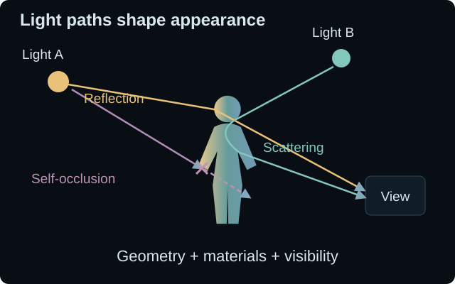

Accurate assets.
Demanding approximations.
For moving humans, a physical renderer needs accurate geometry and the materials of skin, hair, and clothing. Recovering these assets from images is underconstrained, and production quality often requires substantial capture, artist effort, and computation. These practical costs make scaling across people and performances difficult.

There is also a limit to compressing general transport into finite representations. In A Theoretical Analysis of Compactness of the Light Transport Operator, Soler, Molazem, and Subr (2022) show that the general transport operator is non-compact. Finite-rank approximations therefore cannot converge to it uniformly over all unit-norm input radiance fields.
A limit on uniform finite-rank approximation
ℓ = e + 𝒦ℓ
𝒦 non-compact ⇒ ∥𝒦 − 𝒦N∥op ↛ 0
𝒦 transports the full, infinite-dimensional radiance field by one bounce; 𝒦N is finite-rank. The operator norm measures worst-case error over unit-norm inputs. This operator differs from the finite light-to-image transport matrices below.
This result limits uniform approximation with lighting-independent finite bases; it does not rule out Monte Carlo convergence for a fixed rendering problem. Our direction is to learn measured human appearance with structured lighting supervision, while evaluating the remaining approximation and generalization errors.